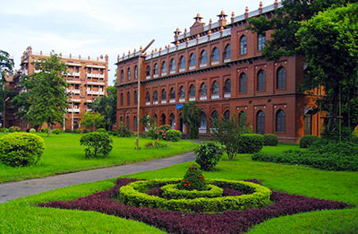
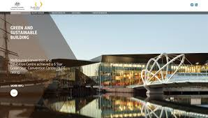

On the first day of July 1921 the University of Dhaka opened its doors to students with Sir P.J. Hartog as the first Vice-Chancellor of the University. The University was set up in a picturesque part of the city known as Ramna on 600 acres of land.
 The University started its activities with 3 Faculties,12 Departments, 60 teachers, 877 students and 3 dormitories (Halls of Residence) for the students. At present the University consists of 13 Faculties, 77 Departments, 11 Institutes, 20 residential halls, 3 hostels and more than 51 Research Centres. The number of students and teachers has risen to about 37,064 and 1,885 respectively.
The main purpose of the University was to create new areas of knowledge and disseminate this knowledge to the society through its students. Since its inception the University has a distinct character of having distinguished scholars as faculties who have enriched the global pool of knowledge by making notable contributions in the fields of teaching and research.
The high standard of education and research for the University was set by its first Vice-Chancellor, Sir P.J. Hartog when in the 2nd Convocation address he said, "A man may be an excellent teacher of elementary subjects without the power to add to knowledge. But in advanced work I maintain that no one can really teach well unless he has the combination of imagination with critical power which leads to the original production (of knowledge), and for that if for no other reason, a university to be a true university must see that its teachers are men who are also capable of advancing knowledge."

At the beginning a distinctive feature of the University of Dhaka was its non affiliating, residential character like that of the Oxford of England. However, since 1947 the University was given an affiliating mandate in place of an exclusive residential-cum-teaching character.
A new phase began in the history of the University with the emergence of the People's Republic of Bangladesh in 1971. This has been a phase of development, expansion and consolidation of earlier gains. The University has assumed a central role in the academic pursuits of the region including this new nation. The University of Dhaka has passed through tumultuous times at different periods of our national history and played vital, at times pioneering, roles in all critical junctures in the making of this great nation. The University played a central role in the Language Movement of 1952 that ultimately culminated in the recognition of Bangla as the State Language. Scores of students, teachers and employees of the University of Dhaka laid down their lives for the independence of the country. Just after the creation of Bangladesh, the government proclaimed the University of Dhaka Order 1973 whereby democratic norms and autonomy became integral features of the institution. While serving as the highest echelon of academic excellence, the University also functions as a central premise for free thought and democratic practices that would lead the nation to its march towards progress.
 The University of Dhaka is increasingly striving to combine the pursuit of knowledge and truth with the values and needs of an evolving society. It is noteworthy that the Governor of Bengal and the Chancellor of the University of Dacca, Loard Lytton in his speech at the first Convocation of the University on 22 February, 1923 said “....this University is Dacca’s greatest possession, and will do more than anything else to increase and spread the fame of Dacca beyond the limits of Bengal or even of India itself”.
Presently the University enrolls more than 5,800 students, on merit basis, in the first year Honours Program in different Departments of the Faculties and the Institutes. Besides conducting teaching courses in the 4- year Bachelor and 1-year Masters Programmes, the University also trains up a large number of researchers in different disciplines. More than 1262 Ph.D. and 1217 M.Phil. researchers have obtained their degrees from this University.
The University of Dhaka is dedicated to the advancement of learning, and is committed to promoting research in all fields of knowledge. As there are plans for further expansion of facilities, plans for new avenues and opportunities, the course curricula are updated and new research projects are undertaken every year. As the pioneer and the largest seat of learning in the country, the University of Dhaka has taken the task to foster the transformation processes of the individual students and the country as a whole through its educational and research facilities keeping up with demands of the day. The University of Dhaka is at this moment one of the leading institutions of higher education in Asia.
The University of Dhaka is well prepared to meet the challenges of the future days with its spirit of freedom, justice and truth as a foundation concomitant to the objectives envisaged by the founding fathers. The open-minded character of the University of Dhaka embodying the features of beauty and historical origins can be seen as one enters the campus.